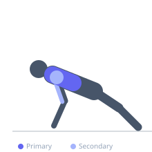

Exercise guide / Ring Push-Up with Feet on Swiss Ball
Ring Push-Up with Feet on Swiss Ball
An extreme instability push-up variation combining gymnastic rings for the hands and a swiss ball for the feet. Both surfaces are unstable, requiring the entire kinetic chain — from wrist through shoulder, core, hip, and ankle — to continuously stabilize while executing the pressing movement. This creates maximal demand on stabilizer muscles across the full body while still loading the pectoralis major through the pressing range.
Primary muscles
pectoralis major sternal
pectoralis major clavicular
Secondary muscles
deltoid anterior
triceps lateral head
Stabilizers
infraspinatus
supraspinatus
pectoralis minor
transverse abdominis
internal oblique
Equipment
Gymnastic Rings
Swiss Ball (Stability Ball / Exercise Ball)


Starting position
- Set rings low (push-up position height). Place a swiss ball behind the rings. Get into push-up position with hands in the rings and feet resting on the swiss ball. Establish full-body stability before the first rep.
Setup
- Set rings at appropriate height for push-ups. Fully inflate the ball. Position ball directly behind rings. Getting into position requires care — have a training partner assist initially.
Steps
- Step 1: Establish a controlled plank with hands in rings and feet on swiss ball. Take several breaths to find balance.
- Step 2: Slowly lower the chest toward the ring level, managing ring rotation and ball roll simultaneously.
- Step 3: Descend until chest is at ring level — this is a very challenging position to maintain.
- Step 4: Press back to the starting position with full control. Reset between each rep if needed.
Coaching cues
- Squeeze the rings and the ball simultaneously — pressure in both directions creates stability
- Every rep is a new challenge — reset mentally before each descent
Breathing
- Inhale before descent, exhale on press. Breathing is controlled and deliberate.
Range of motion
- Full push-up range is the goal, but partial range with full control is acceptable while mastering the exercise.
Tempo
- 4-2-3-0 (slow and controlled throughout)
Common mistakes
- Attempting without mastering ring push-ups and elevated-feet push-ups separately first
- Moving too fast — this exercise requires slow, deliberate movement
- Ball positioned too far back — it should be close enough that feet don't have to reach
Safety
- Have a training partner present for safety on the first several attempts
- Have a clear plan to safely exit the position if stability is lost
- Prerequisites: solid ring push-ups AND swiss ball feet-elevated push-ups
Training
- strength: 2–5 reps
- strength: 2–4 sets
- Rest: {'strength': 240}